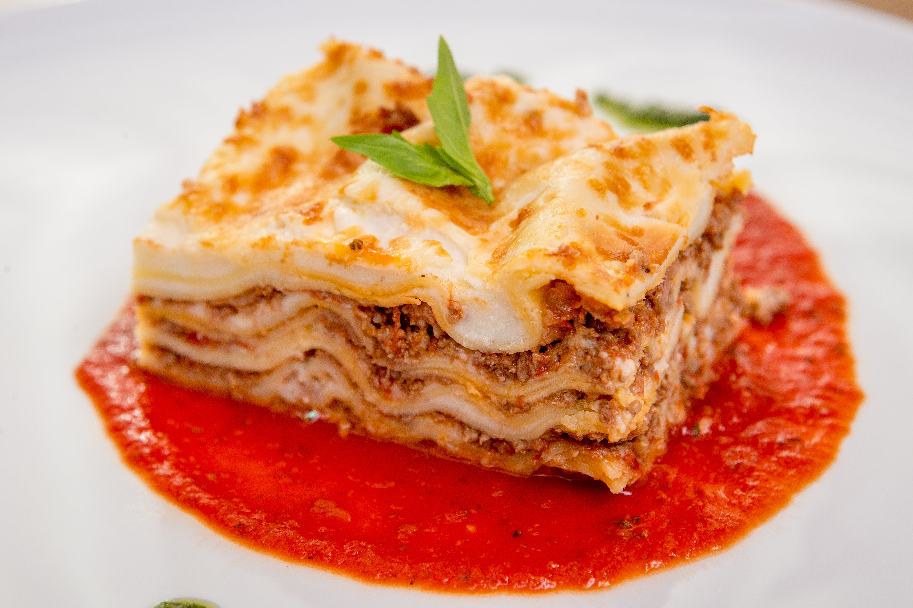

Pagina principal
Receta de Lasagna

Descripción
La lasaña es un plato de origen italiano que consiste en capas alternas de láminas de pasta (generalmente pasta de sémola de trigo duro) intercaladas con una variedad de ingredientes, como salsa de tomate, carne (tradicionalmente carne molida de res o cerdo sazonada con hierbas y especias), queso (como mozzarella, ricotta o parmesano), y a veces incluye verduras como espinacas, berenjenas o champiñones.
Ingredientes:
- Láminas de lasaña (pasta para lasaña)
- 500g de carne molida (puede ser de res o cerdo)
- 2 tazas de salsa de tomate
- 1 taza de salsa bechamel (opcional)
- 2 tazas de queso mozzarella rallado
- 1 taza de queso parmesano rallado
- 1 cebolla picada
- 2 dientes de ajo picados
- 1 zanahoria rallada
- 1 lata de tomate triturado
- Aceite de oliva
- Sal y pimienta al gusto
- Hierbas italianas o albahaca fresca (opcional)
Pasos
- Precalienta el horno a 180°C (350°F).
- En una sartén grande, calienta un poco de aceite de oliva a fuego medio. Agrega la cebolla y el ajo, y cocina hasta que estén dorados. Añade la zanahoria rallada y cocina por unos minutos.
- Agrega la carne molida a la sartén y cocina hasta que esté dorada. Condimenta con sal, pimienta y hierbas al gusto. Agrega la salsa de tomate y el tomate triturado. Cocina a fuego lento durante unos 15-20 minutos, revolviendo ocasionalmente.
- En una bandeja para horno, coloca una capa delgada de la mezcla de carne y tomate. Cubre con una capa de láminas de lasaña.
- Repite el proceso: otra capa de la mezcla de carne, una capa de láminas de lasaña y así sucesivamente hasta llenar la bandeja o terminar con la última capa de láminas de lasaña.
- Si deseas, entre las capas puedes agregar la salsa bechamel.
- Espolvorea generosamente con queso mozzarella y queso parmesano rallado sobre la última capa.
- Cubre la bandeja con papel de aluminio y hornea durante unos 25-30 minutos.
- Retira el papel de aluminio y hornea por otros 10-15 minutos hasta que el queso se dore y burbujee.
- Deja reposar la lasaña unos minutos antes de cortarla para que se asiente.
¡Y listo! Tienes una lasaña deliciosa lista para disfrutar. Puedes acompañarla con una ensalada fresca y pan de ajo.